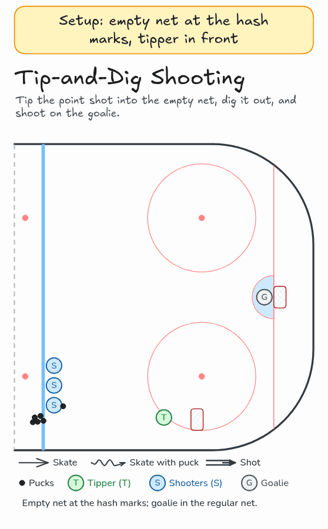

Tip-and-Dig Shooting
Tip the point shot into the empty net, dig it out, and shoot on the goalie.
- Shooting
Watch

Diagram

Coaching points
- Put an empty net at the hash marks. The goalie stays in the regular net on the goal line.
- Tipper: stick on the ice and redirect the point shot into the empty net.
- Dig the puck out of the net quickly, then attack the slot and shoot on the goalie.
- Run it in both corners at the same time if you have the ice.
How it runs
- Place an empty net at the hash marks. One player stands in front of it as the tipper. The shooters line up at the blue line with pucks.
- The first shooter shoots from the blue line and the tipper deflects it into the empty net.
- The tipper digs the puck out of the empty net while the shooter moves in to become the next tipper.
- The tipper carries into the slot and shoots on the goalie.
- After the shot, go to the back of the shooting line. The next shooter goes.